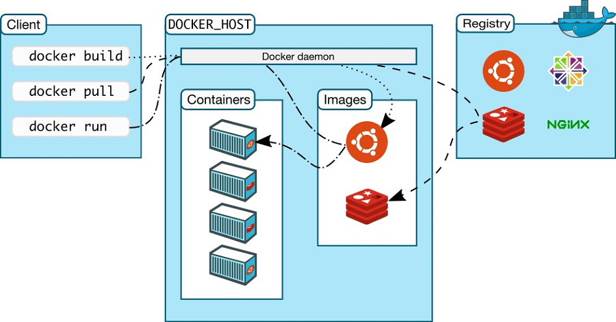
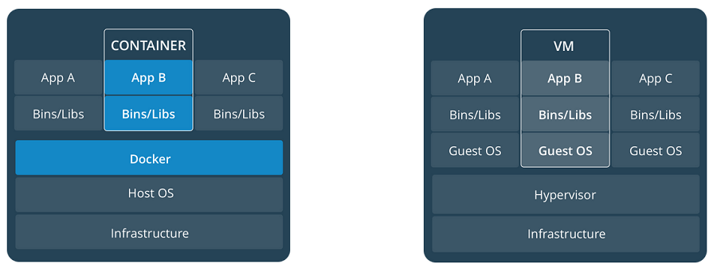

Docker 介绍
Table of Contents

1 Docker
Docker 和虚拟机有着同样的虚拟化的功能，但是 Docker 在完成虚拟化是使用的是“容器”的 技术而非实现虚拟主机的资源，这样带来的好处就是更加轻便。

Docker 的最低依赖是 3.10.x 的 Linux 内核。并且 Docker 可以安装在 Linux，MacOS 和 Windows 10 以上的机器上，安装的方式请参考官网的文档。
2 Docker 容器
2.1 生命周期
- docker create: 创建容器
- docker rename: 重命名容器
- docker run: 创建并启动容器
- docker rm: 删除容器
- docker update: 更新容器运行的资源约束
docker run 是非常常用的一个命令其中比较有用的选项如下：
- -t: 添加一个 tty 终端
- -d: 当容器退出后自动进行 detach 操作
- –volume $HOSTDIR:$DOCKERDIR : 挂载容器外的磁盘
- –publish $HOSTPORT:$DOCKERPORT : 暴露端口
- –name: 制定容器名
2.2 启动和停止
- docker start: 启动容器
- docker stop: 停止容器
- docker restart: 重启容器
- docker pause: 暂停容器
- docker unpause: 重启暂停的容器
- docker wait: 阻断直到容器停止
- docker kill: 发送 SIGKILL 信号到容器
- docker attach: 连接一个运行的容器
2.3 查看容器的状态
- docker ps: 显示当前运行的容器，
-a选项可以显示所有的容器 - docker logs: 显示容器的日志
- docker inspect: 查看所有容器的信息（包括 IP 地址）
- docker events: 获取容器的事件
- docker port: 获取发布的端口
- docker top: 显示容器中的进程
- docker stats: 显示容器资源的使用情况，
--all显示所有的容器 - docker diff: 显示容器的修改的文件
2.4 杂项
- docker cp: 在本地和容器之间复制文件
- docker export: 将文件系统导出成压缩文档，并输出到 STDOUT
- docker exec: 在容器里面执行一个指令
常用的 exec 指令如下，可以启动一个 bash 交互环境。
docker exec -it foo /bin/bash
3 Docker 图像
Docker 图像指的是容器在一个特点时间点的快照，它是一个只读的容器的存储，官网上说 图像是容器的一个模板。
3.1 生命周期
- docker images: 显示所有图像
- docker import: 通过压缩文档导入图像
- docker build: 通过 Dockerfile 创建图像
- docker commit: 通过一个容器来提交一个图像
- docker rmi: 移除一个图像
- docker load: 通过压缩档案作为 STDIN 来导入图像，图像的标签也会一并导入
- docker save: 将图像压缩成压缩档案输出到 STDOUT，图像的 layer, tags, version 一并输出
3.2 显示状态
- docker history: 显示所有历史图像
- docker tag: 重命名图像，打标签等操作
4 工作流
4.1 load/save 图像
加载文件中的图像
docker load < filename.tar.gz
保存图像到文件
docker save imagename:tagname | gzip > filename.tar.gz
4.2 import/export 容器
从一个容器文件中导入容器
cat filename.tar.gz | docker import - imagename:tagname
导出一个容器
docker export containername | gzip > filename.tar.gz
值得一提的是： load 在新建图像时会带人相关的历史信息，tag 等，而 import 只会
创建一个图像，所以 import 的图像的大小会小一点。
5 Registry 和 Repository
registry 是一个宿主机器，一个 registry 包含多个 repository。repository 是存储图 像的仓库，一个 repository 包含多个 image，同时每个 image 又有许多 tag。常见的操 作如下：
- docker login: 登入 registry
- docker logout: 注销 registry
- docker search: 搜索图像
- docker pull: 拉取 registry 的镜像
- docker push: 上传本地图像到 registry
6 Dockerfile
Dockerfile 是配置 Docker 容器的配置文件，通过 docker build 来使用它创建图像。
6.1 Dockerfile 的指令
常见的指令如下表
| Instruction | 描述 |
|---|---|
| FROM | 设置基的图像 |
| RUN | 在新的层数执行一条命令，并且提交结果 |
| CMD | 提供默认执行的容器 |
| EXPOSE | 暴露容器的监听端口， 这条指令只是提供端口，并不会直接暴露 |
| ENV | 设置环境变量 |
| ADD | 从容器外复制文件和目录到容器里面，避免使用 ADD，尽量使用 COPY |
| COPY | 使用 root 权限来复制文件 |
| ENTRYPOINT | 配置容器是入口可执行文件 |
| VOLUME | 配置一个可挂载的点 |
| USER | 设置 RUN/CMD/ENTRYPOINT 的执行用户 |
| WORKDIR | 设置工作目录 |
| ARG | 设置 build 的命令行参数 |
| ONBUILD | 添加一个当容器作为别的基容器是的触发命令 |
| STOPSIGNAL | 设置系统退出的信号 |
| LABEL | 添加 key/value 属性，如：images, container, daemon |
7 私有仓库
添加一些别名帮助查询远端的仓库内容
export REGISTRY='http://localhost:5000' alias ri='_f(){ curl -XGET $REGISTRY/v2/_catalog; }; _f' alias rt='_f(){ curl -XGET $REGISTRY/v2/$1/tags/list; }; _f'
输出结果
$ ri
{"repositories":["gitlab/gitlab-ce","registry","ubuntu"]}
$ rt ubuntu
{"name":"ubuntu","tags":["18.04","latest"]}